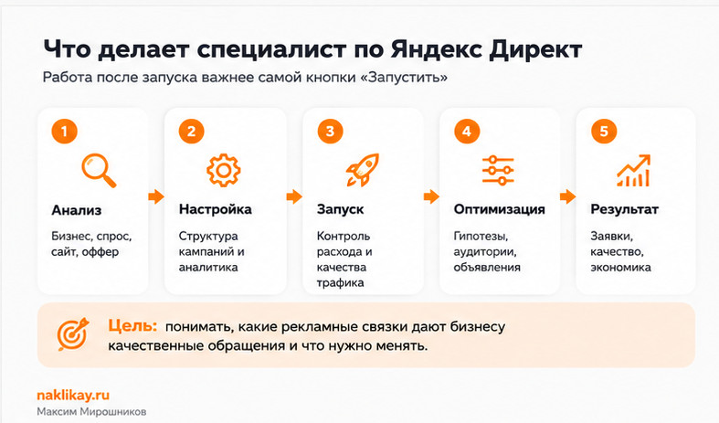
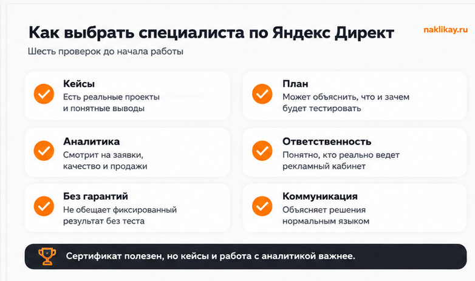

Блог о платном трафике
Специалист по Яндекс Директ: что делает и как выбрать
Специалист по Яндекс Директ настраивает и ведет рекламные кампании, но его работа не должна сводиться к созданию объявлений в кабинете. Задача специалиста - связать рекламу с бизнес-целью: заявками, звонками, продажами и приемлемой стоимостью привлечения клиента.
Для этого приходится разбираться не только в настройках Директа. Нужно анализировать спрос, посадочную страницу, оффер, Метрику, качество обращений и поведение рекламных алгоритмов после запуска.
Если бизнесу нужен подрядчик для настройки и ведения рекламы, я бы оценивал специалиста прежде всего по тому, как он принимает решения и на какие показатели смотрит, а не по количеству обещаний до старта.

Кто такой специалист по Яндекс Директ
Специалиста по Яндекс Директ часто называют директологом или специалистом по контекстной рекламе. Он отвечает за запуск, анализ и оптимизацию рекламы в Яндекс Директе.
В реальном проекте круг задач обычно шире рекламного кабинета. Даже технически правильно собранная кампания не спасет слабый оффер, неудобную форму заявки или страницу, на которой человек не понимает, что ему предлагают.
Поэтому я начинаю работу с разбора бизнеса и воронки: что продается, кому, куда ведется трафик, какие обращения считаются целевыми и по каким цифрам будет оцениваться результат.
Что делает специалист по Яндекс Директ
Набор работ зависит от проекта, но обычно состоит из нескольких этапов.
Анализ бизнеса и текущей рекламы
Перед запуском нужно понять, что именно рекламировать и на каких условиях. Я смотрю:
- продукт или услугу;
- целевые сегменты;
- географию;
- сезонность;
- конкурентов;
- оффер;
- посадочную страницу;
- прошлые рекламные кампании, если они есть;
- цели и данные в Яндекс Метрике.
На этом этапе иногда выясняется, что главная проблема находится не в рекламе. Например, трафик может быть целевым, но форма заявки слишком сложная или предложение на сайте заметно слабее конкурентов.
Подготовка структуры кампаний
Дальше определяется, какие типы кампаний и аудитории имеет смысл тестировать. В зависимости от задачи это могут быть поиск, РСЯ, ретаргетинг, товарные форматы и другие инструменты Директа.
Структура должна позволять отдельно оценивать разные сегменты и управлять бюджетом. Слишком дробная структура усложняет обучение алгоритмов, а слишком общая не дает нормально понять, что именно приносит результат.
Настройка аналитики
Без аналитики реклама превращается в набор кликов и расходов. Минимум, который должен видеть специалист:
- отправки форм;
- звонки, если они важны для бизнеса;
- покупки или другие ключевые действия;
- стоимость конверсии;
- качество обращений;
- при наличии данных - выручку и окупаемость.
Одной цели «посетил страницу» обычно недостаточно для оценки эффективности рекламной кампании.
Запуск и первичное обучение кампаний
После запуска важно не пытаться менять настройки каждый день только потому, что за несколько часов не появились заявки. Автоматическим стратегиям требуется статистика, а небольшие выборки легко приводят к неправильным выводам.
Одновременно нельзя оставлять кампании без контроля. Нужно следить за расходом, поисковыми запросами, площадками, конверсиями и явными аномалиями.
Оптимизация и масштабирование
После накопления статистики начинается основная работа. Специалист смотрит, какие связки дают результат, а какие расходуют бюджет без нужного эффекта.
В работу могут входить:
- корректировка семантики и минус-фраз;
- отключение слабых площадок и сегментов;
- тестирование объявлений и креативов;
- изменение структуры кампаний;
- работа со ставками и стратегиями;
- корректировка целей;
- доработка посадочной страницы;
- перенос бюджета в более эффективные направления;
- масштабирование связок, которые дают качественные заявки.

Настройка и ведение - это разные задачи
Разовая настройка заканчивается запуском кампаний и передачей проекта. Ведение - это постоянная работа после запуска: анализ данных, контроль качества трафика, изменения в кампаниях и новые тесты.
Для большинства бизнесов именно ведение определяет итоговый результат. Конкуренция меняется, появляются новые запросы, алгоритмы перераспределяют трафик, часть площадок ухудшается, а рекламные объявления со временем перестают давать прежний эффект.
Если нужен только запуск, это можно оформить как отдельную задачу. Если реклама должна быть постоянным каналом продаж, специалисту нужен доступ к статистике и возможность регулярно оптимизировать кампании.
Какими навыками должен обладать специалист
Хороший директолог должен уметь работать не только с интерфейсом Яндекс Директа.
Знание Яндекс Директа
Специалист должен понимать:
- типы кампаний и места показа;
- автоматические и ручные стратегии;
- принципы работы аукциона;
- ключевые фразы и автотаргетинг;
- аудитории и ретаргетинг;
- товарные объявления и фиды, если они нужны проекту;
- ограничения и особенности разных рекламных форматов.
Интерфейс и инструменты Директа регулярно меняются, поэтому знания, полученные несколько лет назад, нельзя считать достаточными без постоянной практики.
Яндекс Метрика и аналитика
Директологу нужно уметь проверять цели, источники трафика, поведение пользователей и конверсии. Для более сложных проектов полезно понимать коллтрекинг, CRM, офлайн-конверсии и сквозную аналитику.
Маркетинговое мышление
Если специалист оценивает работу только по CTR и цене клика, этого мало. Для бизнеса важнее стоимость и качество обращения, продажи и экономика рекламного канала.
Высокий CTR сам по себе не делает рекламу эффективной, а дешевый клик может оказаться хуже дорогого, если из него не получается заявок.
Работа с сайтом и оффером
Директолог не обязан быть разработчиком или дизайнером, но должен видеть явные проблемы посадочной страницы и объяснять, почему они мешают рекламе.
Иногда увеличение конверсии сайта дает больший эффект, чем дальнейшее уменьшение стоимости клика на несколько процентов.
Как выбрать специалиста по Яндекс Директ
Я бы проверял подрядчика по шести пунктам.
1. Посмотрите реальные кейсы
Лучше, если есть проекты со схожей моделью бизнеса или похожей задачей. Не обязательно искать точное совпадение ниши, но кейс должен показывать, что специалист умеет работать с цифрами и объяснять сделанные изменения.
2. Попросите объяснить план до запуска
Специалист не обязан заранее знать точную цену заявки. Без статистики проекта и тестового периода такие прогнозы часто превращаются в гадание.
Но он должен объяснить:
- какие кампании хочет запускать;
- какие данные нужны;
- как будет оценивать эффективность;
- что проверит на сайте;
- какие гипотезы протестирует первыми.
3. Уточните, кто будет реально вести проект
Это особенно важно при работе с агентством или командой. Человек, который продает услугу, и человек, который ежедневно смотрит кампании, могут быть разными специалистами.
Я веду проекты лично, поэтому клиент общается напрямую со мной без менеджера между рекламным кабинетом и бизнесом.
4. Проверьте подход к аналитике
Если разговор строится только вокруг показов, кликов и CTR, стоит уточнить, как будут учитываться заявки и их качество.
Для бизнеса конечная цель обычно находится дальше клика.
5. Посмотрите, как специалист относится к гарантиям
Нормальный подрядчик может прогнозировать, строить гипотезы и отвечать за качество своей работы. Но заранее гарантировать конкретное количество продаж или фиксированную стоимость заявки без теста нельзя.
Результат зависит не только от настроек Директа, но и от спроса, конкуренции, цены, сайта, отдела продаж и самого продукта.
6. Сертификат полезен, но не решает все
У Яндекса есть сертификация специалистов по Директу с несколькими уровнями тестирования. Сертификат подтверждает знание инструментов, но сам по себе не показывает, насколько человек умеет работать с конкретным бизнесом.
Поэтому я бы рассматривал сертификацию как дополнительный плюс вместе с кейсами, аналитическим подходом и понятной коммуникацией.
Официальная информация: сертификация специалистов по Яндекс Директу.

Частный специалист или агентство
У каждого формата есть свои плюсы.
Частный специалист обычно дает прямой контакт с исполнителем и меньше промежуточных звеньев. Агентство может быть удобнее, если одновременно нужны разные специалисты и большой объем работ.
Главное - понимать, кто принимает решения по рекламной кампании, кто отвечает за аналитику и насколько быстро можно обсуждать изменения.
Сколько стоят услуги специалиста по Яндекс Директ
Единой цены нет. Стоимость зависит от объема работы и ответственности:
- требуется только настройка или постоянное ведение;
- сколько направлений и регионов рекламируется;
- какой рекламный бюджет;
- сколько кампаний и посадочных страниц;
- нужна ли сложная аналитика;
- насколько часто запускаются новые гипотезы.
Сравнивать специалистов только по цене услуги обычно неправильно. Более полезно смотреть, что именно входит в работу, кто ведет кампании и по каким показателям подрядчик оценивает результат.
Когда специалист по Директу действительно нужен
Обращаться к специалисту имеет смысл, если:
- реклама запускается впервые и нет человека, который отвечает за нее внутри компании;
- кампании уже работают, но непонятно, какие из них дают результат;
- стоимость заявок растет;
- есть подозрение на нецелевой трафик или слабые площадки;
- нужно масштабировать рабочие кампании;
- в Метрике и рекламном кабинете много данных, но по ним не принимаются решения;
- реклама регулярно требует изменений, а у владельца бизнеса нет времени разбираться в системе самостоятельно.
Если кампании уже настроены и вопрос только в качестве текущей работы, логичнее начать с аудита.
Что спросить у специалиста перед началом работы
Короткий список вопросов помогает быстро понять подход подрядчика:
- Какие данные вам нужны до запуска?
- Какие показатели вы будете считать основными?
- Кто будет работать в рекламном кабинете?
- Как часто вы анализируете кампании?
- Как вы оцениваете качество заявок?
- Что будете делать, если кампания не выйдет на приемлемую стоимость обращения?
- Какие изменения на сайте могут понадобиться?
- Как будет выглядеть отчетность?
Хороший специалист обычно отвечает на такие вопросы конкретно и привязывает ответы к бизнесу, а не к универсальному шаблону.
Специалист по Яндекс Директ должен отвечать за систему, а не за кнопки
Настроить рекламную кампанию технически стало проще, чем несколько лет назад. Многие решения Яндекс Директ принимает автоматически. Из-за этого ценность специалиста смещается от ручной настройки каждой мелочи к правильной постановке задачи, аналитике, контролю данных и поиску рабочих рекламных связок.
Я оцениваю рекламу именно так: что происходит с заявками, сколько они стоят, какого они качества и что можно изменить в кампании, оффере или посадочной странице, чтобы результат стал лучше.
Если хотите посмотреть, как такой подход выглядит на реальных проектах, на главной странице собраны мои кейсы по разным нишам.
FAQ
Как называется специалист по Яндекс Директ?
Чаще всего используют названия «директолог», «специалист по Яндекс Директ» и «специалист по контекстной рекламе». В реальной работе обязанности могут различаться: один подрядчик занимается только настройкой, другой берет на себя аналитику, ведение и работу с посадочной страницей.
Можно ли настроить Яндекс Директ самостоятельно?
Да. Для простого проекта это возможно. Но при постоянном рекламном бюджете обычно требуется регулярно анализировать статистику, тестировать гипотезы и контролировать качество трафика. Именно эта работа чаще всего занимает больше времени, чем первоначальный запуск.
Что лучше: разовая настройка или ведение?
Если реклама нужна на короткий тест, можно начать с настройки. Для постоянного канала привлечения клиентов лучше предусмотреть ведение после запуска, потому что кампании требуют анализа и корректировок по мере накопления данных.
Как понять, что специалист работает хорошо?
Смотрите не на количество внесенных изменений, а на связь рекламы с бизнес-показателями. Должно быть понятно, сколько денег потрачено, сколько получено целевых обращений, какого они качества и какие решения принимаются на основе статистики.
Нужен ли сертификат Яндекс Директа?
Сертификат подтверждает знание инструментов и может быть дополнительным критерием выбора. Но он не заменяет реальные кейсы, понимание аналитики и способность работать с задачами конкретного бизнеса.